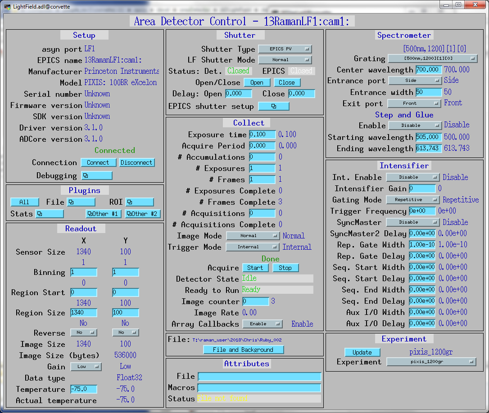
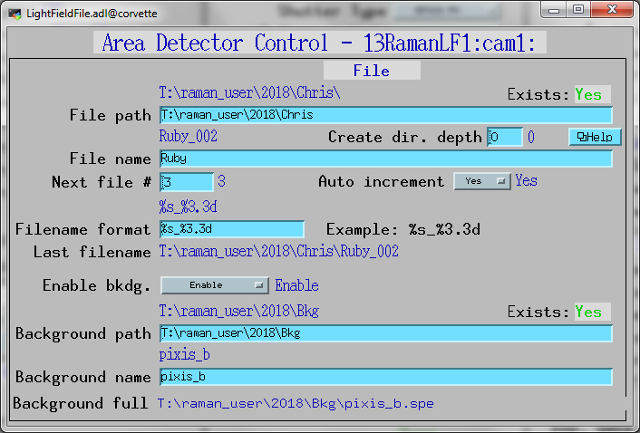
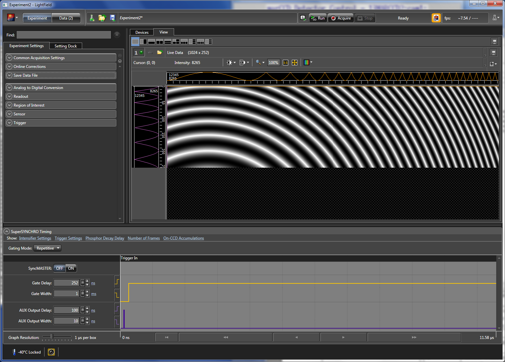

ADLightField
areaDetector LightField driver
- author:
Mark Rivers, University of Chicago
Introduction
This is an areaDetector driver for recent Princeton Instruments detectors including the ProEM, PIXIS, PI-MAX3, PI-MAX4, PyLoN, and Quad-RO. It also supports the Acton Series spectrographs.
The interface to the detector is via the Microsoft Common Language Runtime (CLR) interface to the LightField program that Princeton Instruments sells. The areaDetector driver effectively “drives” LightField through the CLR interface, performing most of the same operations that can be performed using the LightField GUI. The advantage of this communication mechanism is that the user can continue to use LightField for viewing images and for configuration operations. LightField is automatically started when the areaDetector software is started.
Because EPICS and the LightField GUI can control many of the same parameters the user must be aware of the interactions between the two control systems. The basic rule is that the value of a parameter will be determined by whichever control system last wrote to that parameter. The LightField widget will display the current value of a parameter no matter how it was last changed. EPICS will correctly display the current value of the parameter in the “readback” record, which typically ends in “_RBV”, no matter how the value was last changed. However the EPICS output record does not currently update if the value is changed in LightField. This may change in a future version of asyn device support.
This driver inherits from ADDriver. It implements many of the parameters asynNDArrayDriver.h and in ADArrayDriver.h. It also implements a number of parameters that are specific to the LightField application.The LightField class documentation describes this class in detail.
Implementation of standard driver parameters
The following table describes how the LightField driver implements some of the standard driver parameters. Note that there are 4 possible levels of nested acquisition looping when using the LightField driver. From the innermost to outermost loop these are as follows:
LFNumAccumulations
$(P)$(R)NumAccumularions. This controls the number of accumulations per image. Accumulations are acquired in hardware on the detector before it is read out.ADNumExposures
$(P)$(R)NumExposures. This controls the number of images that are summed together by LightField into a single image.ADNumImages
$(P)$(R)NumImages. This controls the number of images per acquisition. This is also called AcquisitionFramesToStore in LightField’s terminology. These images will all be acquired into a single 3-D array, and saved to a single SPE file in LightField.LFNumAcquisitions
$(P)$(R)NumAcquisitions. This controls the number of times that the driver will repeat an acquisition sequence. This is has no equivalent in LightField, it is handled entirely by the areaDetector driver. It can be used to acquire multiple data sets, where each is controlled by the above parameters. NOTE: NumAcquisitions is not yet implemented, but is planned in a future release.
Implementation of Parameters in asynNDArrayDriver.h and ADDriver.h, and EPICS Record Definitions in ADBase.template and NDFile.template |
||
|---|---|---|
Parameter index variable |
EPICS record name |
Description |
ADImageMode |
$(P)$(R)ImageMode |
The driver redefines the choices for the ADImageMode parameter (record $(P)$(R)ImageMode) from ADDriver.h. The choices for the LightField are:
|
ADNumExposures |
$(P)$(R)NumExposures |
Controls the number of exposures that LightField will sum into a single image. |
ADNumImages |
$(P)$(R)NumImages |
Controls the number of images to acquire into a single 3-D data set. |
ADGain |
$(P)$(R)Gain |
The precision of the $(P)$(R)Gain record is changed to 0 because the gain in LightField is an integer. Allowed values are detector dependent, but 1 and 2 are typically supported. |
LightField specific parameters
The LightField driver implements the following parameters in addition to those in asynNDArrayDriver.h and ADDriver.h.
Parameter Definitions in LightField.cpp and EPICS Record Definitions in LightField.template |
||
|---|---|---|
Description |
EPICS record name |
EPICS record type |
Acquisition parameters |
||
The number of on-chip accumulations to perform per image. |
$(P)$(R)NumAccumulations, $(P)$(R)NumAccumulations_RBV |
longout, longin |
The number of acquisitions to perform when acquisition is started. This controls the number of iterations in the outermost acquisition loop explained above. NOTE: This is not yet implemented, it is planned for a future release. |
$(P)$(R)NumAcquisitions, $(P)$(R)NumAcquisitions_RBV |
longout, longin |
The number of acquisitions performed so far. |
$(P)$(R)NumAcquisitionsCounter_RBV |
longin |
The camera gain. This parameter is used instead of the base class ADGain parameter so that it can be displayed as a menu as LightField does. |
$(P)$(R)LFGain, $(P)$(R)LFGain_RBV |
mbbo, mbbi |
The shutter operating mode for shutters controlled by LightField. Allowed values are:
|
$(P)$(R)LFShutterMode, $(P)$(R)LFShutterMode_RBV |
mbbo, mbbi |
Experiment parameters |
||
Selects the LightField experiment, which is a set of experimental conditions including the selected camera, etc. The record choices are constructed at run-time based on the experiment files currently available. |
$(P)$(R)LFExperimentName, $(P)$(R)LFExperimentName_RBV |
mbbo, mbbi |
Updates the choices in the LFExperimentName records. This is only needed if a new experiment is created after the EPICS IOC is started. |
$(P)$(R)LFUpdateExperiments |
bo |
Spectrometer parameters |
||
Selects the spectrometer grating. The record choices are constructed at run-time based on the gratings actually available. |
$(P)$(R)LFGrating, $(P)$(R)LFGrating_RBV |
mbbo, mbbi |
Selects the center wavelength of the spectrometer. |
$(P)$(R)LFGratingWL, $(P)$(R)LFGratingWL_RBV |
ao, ai |
Selects the starting wavelength of the spectrometer for Step And Glue. |
$(P)$(R)LFSAGStartingWL, $(P)$(R)LFSAGStartingWL_RBV |
ao, ai |
Selects the ending wavelength of the spectrometer for Step And Glue. |
$(P)$(R)LFSAGEndingWL, $(P)$(R)LFSAGEndingWL_RBV |
ao, ai |
Enables and disables Step and Glue. |
$(P)$(R)LFSAGEnable, $(P)$(R)LFSAGEnable_RBV |
bo, bi |
Selects the entrance width of the side port on the spectrometer in microns. |
$(P)$(R)LFEntranceWidth, $(P)$(R)LFEntranceWidth_RBV |
longout, longin |
Selects the entrance port of the spectrometer. Choices are:
|
$(P)$(R)LFEntrancePort, $(P)$(R)LFEntrancePort_RBV |
mbbo, mbbi |
Selects the exit port of the spectrometer. Choices are:
|
$(P)$(R)LFExitPort, $(P)$(R)LFExitPort_RBV |
mbbo, mbbi |
File name parameters. These are in addition to the normal parameters from NDFile.template. |
||
The actual file path for saving data. |
$(P)$(R)LFFilePath_RBV |
waveform |
The actual file name for saving data. |
$(P)$(R)LFFileName_RBV |
waveform |
The file path to use for saving background data. |
$(P)$(R)LFBackgroundPath, $(P)$(R)LFBackgroundPath_RBV |
waveform, waveform |
Flag to indicate if the file path to use for saving background data exists. If it does not exist it will be created if the $(P)$(R)CreateDirectory PV is set appropriately. |
$(P)$(R)LFBackgroundPathExists_RBV |
bi |
The file name to use for saving background data. |
$(P)$(R)LFBackgroundFile, $(P)$(R)LFBackgroundFile_RBV |
waveform, waveform |
The actual full file name for saving background data. |
$(P)$(R)LFBackgroundFullFile_RBV |
waveform |
Enable background correction. |
$(P)$(R)LFBackgroundEnable, $(P)$(R)LFBackgroundEnable_RBV |
bo, bi |
Image intensifier and timing parameters. |
||
Enable image intensifier. |
$(P)$(R)LFIntensifierEnable, $(P)$(R)LFIntensifierEnable_RBV |
bo, bi |
Image intensifier gain. |
$(P)$(R)LFIntensifierGain, $(P)$(R)LFIntensifierGain_RBV |
ao, ai |
Image intensifier gating mode. Choices are:
|
$(P)$(R)LFGatingMode, $(P)$(R)LFGatingMode_RBV |
mbbo, mbbi |
Selects the intensifier trigger frequency. |
$(P)$(R)LFTriggerFrequency, $(P)$(R)LFTriggerFrequency_RBV |
ao, ai |
Enable sync master. |
$(P)$(R)LFSyncMasterEnable, $(P)$(R)LFSyncMasterEnable_RBV |
bo, bi |
Selects the sync master 2 delay. |
$(P)$(R)LFSyncMaster2Delay, $(P)$(R)LFSyncMaster2Delay_RBV |
ao, ai |
Selects the repetitive gate width. |
$(P)$(R)LFRepGateWidth, $(P)$(R)LFRepGateWidth_RBV |
ao, ai |
Selects the repetitive gate delay. |
$(P)$(R)LFRepGateDelay, $(P)$(R)LFRepGateDelay_RBV |
ao, ai |
Selects the sequential start gate width. |
$(P)$(R)LFSeqStartGateWidth, $(P)$(R)LFSeqStartGateWidth_RBV |
ao, ai |
Selects the sequential start gate delay. |
$(P)$(R)LFSeqStartGateDelay, $(P)$(R)LFSeqStartGateDelay_RBV |
ao, ai |
Selects the sequential end gate width. |
$(P)$(R)LFSeqEndGateWidth, $(P)$(R)LFSeqEndGateWidth_RBV |
ao, ai |
Selects the sequential end gate delay. |
$(P)$(R)LFSeqEndGateDelay, $(P)$(R)LFSeqEndGateDelay_RBV |
ao, ai |
Selects the auxiliary width. |
$(P)$(R)LFAuxWidth, $(P)$(R)LFAuxWidth_RBV |
ao, ai |
Selects the auxiliary delay. |
$(P)$(R)LFAuxDelay, $(P)$(R)LFAuxDelay_RBV |
ao, ai |
Miscellaneous parameters. |
||
Enable background correction. |
$(P)$(R)LFBackgroundEnable, $(P)$(R)LFBackgroundEnable_RBV |
bo, bi |
Flag indicating if LighField is ready to collect data. |
$(P)$(R)ReadyToRun |
bi |
Configuration
The LightField driver is created with the LightFieldConfig command, either from C/C++ or from the EPICS IOC shell.
int LightFieldConfig(const char *portName, const char *experimentName,
int maxBuffers, size_t maxMemory,
int priority, int stackSize)
For details on the meaning of the parameters to this function refer to the detailed documentation on the LightFieldConfig function in the LightField.cpp documentation and in the documentation for the constructor for the LightField class.
Example st.cmd startup file
There an example IOC boot directory and startup script provided with areaDetector: Example st.cmd Startup File.
MEDM screens
The following show the MEDM screens that are used to control the LightField detector. Note that the general purpose screen ADBase.adl can be used, but it exposes a few controls that are not applicable to the LightField, and lacks some fields that are important for the LightField.
LightField.adl
LightField.adl is the main screen used to control the LightField driver.
LightFieldFile.adl
LightFieldFile.adl is the screen used to control LighField file I/O.
LighField program from Priceton Instruments
LighField is the program that the LightField driver is controlling via Microsoft Common Language Runtime.
Restrictions
The following are some current restrictions of the LightField driver:
If LightField encounters an error it will crash the IOC. The driver establishes an exception handler, but this does not seem to work correctly with the LightField CLR interface.